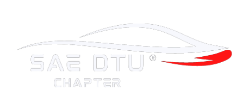

Differential is an essential part of a vehicle which allows the splitting of torque between the two powered wheels and allows them to turn with different speeds. The differentials also help in torque multiplication and help to turn the power transmission by 90° from the propeller shaft to the drive shaft.
Now why would we want to rotate the wheels at different speeds?
The answer is that when a vehicle is making a turn at a corner the outside wheel travels more distance as compared to the inside wheel. So, the outside wheel needs to have a greater number of revolutions as compared to the inside wheel. This is where the role of differential comes into play.
The number of differentials can be different in different vehicles. For example, in a 4 wheel-drive vehicle, two differentials are used, one for front axle and one for rear axle but in case of 2 wheel-drive vehicles only rear wheels have differential present. For this blog, we will talk about 2 wheel-drive vehicles.
Types of Differentials
With time, a number of different types of differentials were introduced to increase the efficiency and reduce the losses. The first type that we will talk about is Locked Differential.
Locked Differential
A locked differential is the most basic differential with a Pinion-Bevel gear assembly. The power is transmitted from the propeller shaft to the rear axle shaft through the differential. Both the rear wheels are connected through one shaft and thus both wheels rotate with the same speed and thus variation in the torque between two wheels is possible. Due to unavailability of speed difference, the wheels skid while making a turn and produce wear and tear. Thus, locked differentials are suitable for off-roading conditions, where slipping of wheels does not cause much damage.
Open Differential
Open differentials allow the wheels to rotate at different speeds and hence make a smooth turn while turning without any skidding. The open differentials consist of Drive pinion from drive shaft which is assembled with the Ring gear (Forming a Pinion-Bevel gear assembly). The ring gear is then connected to differential pinion or spider gears. The spider gears are free to rotate on their own axis as well as with the ring gear. The spider gear is meshed with two side gears which are connected to the left and right axle shaft. The power from the drive shaft is transferred to the ring gear via the pinion gear. During the straight motion of the vehicle, the spider gears rotate along the ring gear and there is no spinning of the spider gears on their own axis. The spider gears push the side gears and make them rotate with the same speed. The ring gear, spider gear, and side gears work as a single unit in this case and rotate with the same speed. Now let’s consider the vehicle making a right turn. In that case the spinning of spider gears on their own axis comes into play. While making the turn, the spider gears will rotate with the ring gear as well as spin on their own axis. If watching from the centre of the differential, the spider gear will appear to be spinning in an anti-clockwise direction on its axis. This rotation will lead to higher rotation of the left axle as compared to right axle and hence will help the vehicle make a right turn without skidding. This is because the left axle rotates with speed that is the sum of rotation and spinning velocity of the spider gear while the right axle rotates with a speed that is the difference between the rotational and spin velocity of the spider gear. The open differential play’s great role while the vehicle is moving on a flat surface with equal traction on both wheels as the open differential provides equal amount of torque to both the wheels no matter what the condition is. The problem arrives when the wheels rotate with different traction or one wheel is up in the air while the other is on the surface. In that case, the majority of the power from the propeller shaft will be transferred to the wheel which is on a lower traction surface or is in the air. This will result in non-movement of the vehicle. To overcome this problem, Limited Slip Differentials (LSD) were introduced.
Limited Slip Differentials (LSD)
The locked differential can work well on uneven surfaces with different traction as the wheels can have different amounts of torque transferred to them but locked differential do not fulfil the task of a smooth turn around the corner without skidding of the wheels. On the other hand, the Open differential helps to make a turn around the corner by varying the speed between two wheels but on an uneven surface it fails. To have the advantages of both the world’s, Locked Differentials were introduced. Locked differentials have the ability of performing as an open as well as a locked differential. The structure of Limited Slip Differential is very similar to that of open differential except that Pressure rings and Clutch pack is present and the pinion shaft is not directly connected to the differential housing but it is attached to the pressure rings.
Whenever one of the wheels is stuck in mud or snow or a low traction surface or it is in the air, the driver accelerates. Due to the acceleration, there is a relative motion between the differential pinion shaft and the pressure rings. The pinion shaft moves backward leading to the pressure rings moving outwards. Due to the outward motion the clutch pack compacts and due to friction it moves the whole differential housing as one unit and both the left and right axle moves with the same speed and makes the differential work like a locked differential. When the car is not accelerating and making a turn there is no outward force on the pressure rings and thus the spider gears spin and work as an open differential.